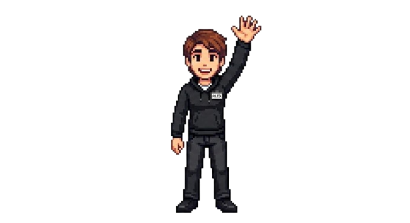
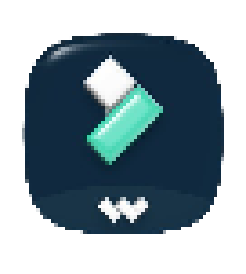

ibisinella.edit
BIENVENIDO A MI PORTAFOLIO


¡Buenas! Soy Ignacio Bisinella.
Le meto pila hasta que el video queda joya. Laburo para que tu marca destaque en cualquier red social.
Manejo Filmora y Canva para crear contenido dinámico y profesional adaptado a lo que necesites.